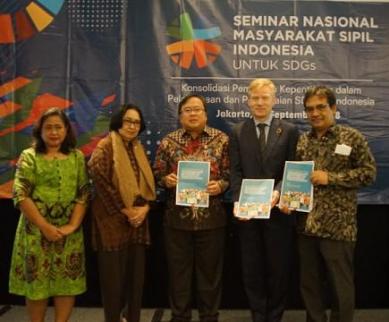
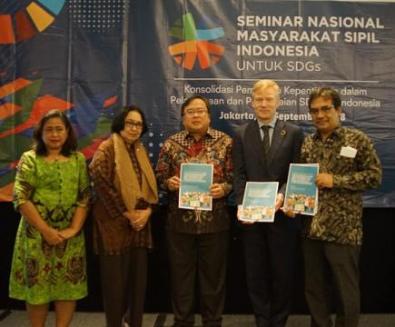

Sustainable Development Goals (SDGs) atau Tujuan Pembangunan Berkelanjutan merupakan kerja sama dan komitmen global antara 193 negara anggota PBB, untuk mewujudkan 17 goals atau 17 tujuan yang telah disepakati. SDGs dirancang untuk mengatasi tantangan-tantangan serta isu-isu global yang semakin marak beberapa tahun terakhir ini. Isu-isu global itu meliputi kemiskinan, kesenjangan, perubahan iklim, dan pembangunan yang berkelanjutan. Karena itu, kerjasama global tentu sangat diperlukan. Bahkan, kerjasama global merupakan kunci utama, karena isu-isu tersebut lintas batas dan dialami oleh hampir seluruh negara, sehingga diperlukan suatu solusi kolektif. Adanya SDGs menunjukkan bahwa negara-negara memiliki tanggung jawab untuk menyelesaikan isu-isu yang dialami di negaranya melalui indikator SDGs, dan juga memiliki tanggung jawab bersama untuk memastikan tercapainya 17 tujuan tersebut; suatu tanggung jawab yang hanya dapat terwujud dengan adanya kerjasama antarnegara.
SDGs 12 yang semula kita bahas, berfokus pada pola konsumsi dan produksi yang berkelanjutan. SDGs ini merupakan contoh konkret yang menegaskan pentingnya kerja sama. Dalam upaya mengurangi limbah makanan, negara-negara perlu berbagi teknologi, kebijakan, dan praktik, budaya, bahkan kebiasaan yang baik. Contoh konkret yang dialami negara kita sendiri ialah, kolaborasi antara negara maju dan berkembang untuk mengurangi sampah plastik melalui teknologi daur ulang adalah bentuk kerja sama yang strategis. Selain itu, Indonesia dan Suriname, meskipun terpisah oleh jarak geografis, telah menunjukkan kerja sama melalui hubungan budaya dan pelestarian lingkungan. Meskipun jarak Indonesia dan Suriname secara geografis sangat jauh, keduanya tetap menjalin hubungan yang erat dan saling melengkapi. Indonesia dan Suriname bahkan bekerja sama dalam pengelolaan hutan tropis dan keanekaragaman hayati, yang menjadi aset penting kedua negara untuk mendukung pembangunan berkelanjutan.
Kolaborasi dan kerjasama antarnegara tidak hanya menciptakan peluang untuk mencapai target SDGs dengan lebih serentak dan merata, namun juga memperkuat persahabatan antar negara. Melalui interaksi, kerjasama dan komunikasi, pemahaman yang lebih mendalam dan kemampuan untuk saling melengkapi dapat tercipta. Adanya SDGs merupakan hasil dari kerja sama, komitmen, dan persahabatan antar negara. Namun keberadaan SDGs-lah yang juga mendorong agar kerja sama terus terjalin. Kesimpulannya, SDGs tidak hanya menjadi tujuan akhir, tetapi juga platform mempererat hubungan antar negara, organisasi regional, dll. Dalam setiap langkah menuju keberlanjutan, kerja sama menjadi fondasi utama yang memungkinkan tercapainya solusi yang inovatif dan inklusif untuk dunia yang lebih baik bagi generasi mendatang.